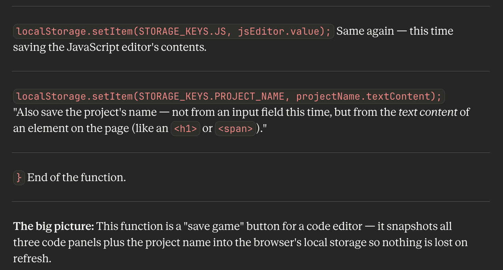
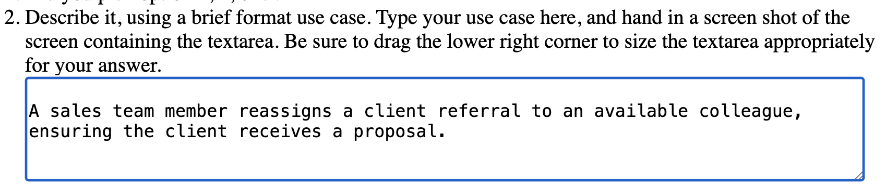
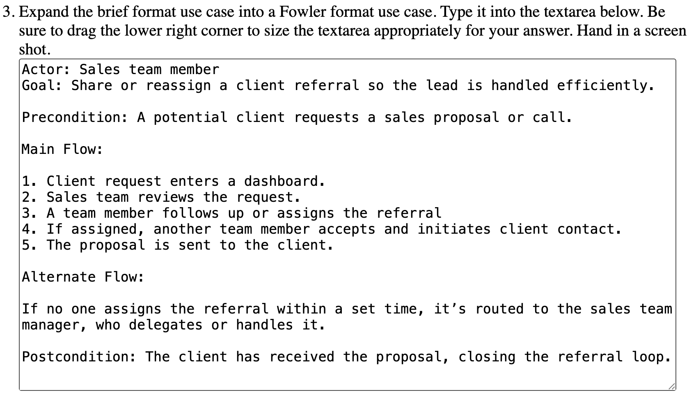

Module 6
Due: 3.4.2026
1.Add a section for JavaScript commands at the top of your HTML demo page. Now it is more of an "HTML + JavaScript" demo page. Demonstrate 6 different commands (in addition to the ones from last time), using a button to run each of them.
2.For the HTML section of your demo page, alphabetize the commands for easy lookup, and number them also.
For this answer I went ahead and stuck with the organizational structure I chose at the begining of the semester rather than reflow thee entire document alphabetically. I feel the code previews for each section and the overall layout still meets the desired goal of being a useful reesource. Elements are grouped by type and there is a global element count and a per section element count in the top right corner of each element.
3. Make an improvement to your sandbox. Explain, and give a link to the sandbox.
Using Claude Code I added line numbers to the html/css/js. This provides:
- Better error tracking - Console will reference "Error on line 15", now you can find it
- Code navigation - Easier to reference specific lines when debugging
- Professional feel - Matches real code editors like VS Code
- Minimal performance impact - Updates only on input, uses simple string operations
4. For a line or two of JavaScript in your sandbox, learn the details of how it works using AI. This time, do not use Socratic qustioning. Instead, you ask the AI the questions rather than it asking you the questions. Guide the AI to provide answers you can actually learn from. For example, some AIs tend to give answers that are several paragraphs long, when what you need (at least, what I need when doing this sort of thing) are very short answers suitable for beginners on the topic. Hand in a copy-paste of the transcript, and also, hand in a screenshot of the end of the transcript showing your interaction with the AI.
JavaScript Discovery Transcript 
5a. Consider the "JavaScript Statements" lesson. What is the minimum number of statements in a code block, that is, the stuff typically between curly braces, as in, {your code here}?
One
5b. Consider the "JavaScript Statements" lesson. Guestimate the maximum number of statements in a code block.
The minimmum is One and there is no maximum.
5c. Consider the "JavaScript Statements" lesson. T or F: The semicolon (;), is a statement separator in JS.
True.
6.1. Did you pick option 1, 2, or 3?
3
6.2. Describe it, using a brief format use case. Type your use case here, and hand in a screen shot of the screen containing the textarea. Be sure to drag the lower right corner to size the textarea appropriately for your answer.

6.3. Expand the brief format use case into a Fowler format use case. Type it into the textarea below. Be sure to drag the lower right corner to size the textarea appropriately for your answer. Hand in a screen shot.

6.4. Feed the use case(s) to an AI and ask it to create a prototype web page containing JavaScript and HTML that implements the prototype. Then get it to fix or improve the result. Hand in a link to the page containing your prototype.
USE CASE DEMO: Referals Tracker
6.5. Take a few minutes to debate this problem. In your own words, describe what stood out to you about this experience, your thoughts, whatever reactions you might have had about it, about planes, cars, birds, helicopters, etc., and any thoughts or reactions you had along the way.
I was genuinely curious to see how efficiently I could build a single-page web app proof of concept for the use case I created. The goal was to keep it lean, contained in a single file, and still demonstrate the core workflow clearly. Having the ability to move that fast with AI support was honestly pretty impressive, especially when the task stayed focused on demonstrating the concept rather than overbuilding the implementation.
What stood out to me is that the use case work up front helped me avoid a lot of common pitfalls. By taking time to define the actor, the goal, and the main path (plus what happens when things stall), I didn’t have to constantly backtrack or re-decide what the system was supposed to do. Even though this was exploratory, it reinforced that ambiguity is easier to manage when you build with empathy and keep the larger organizational goals in view. In the end, rapid “vibe coding” and prototyping tools are extremely effective when you feed them the right structure. Use cases translate surprisingly well into initial prompts and help keep the output aligned with what matters.